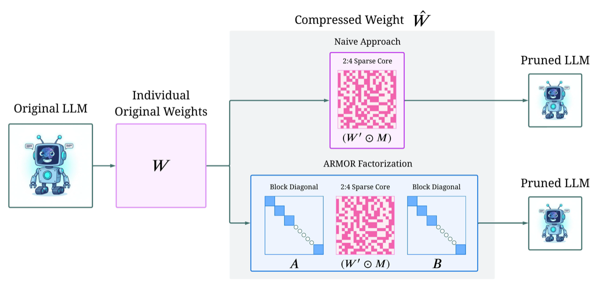

Why it matters왜 중요한가
The pruning dilemma: methods that are actually fast on hardware lose accuracy; methods that keep accuracy aren't actually fast.
프루닝의 딜레마: 실제로 빠른 방법은 정확도를 잃고, 정확도를 지키는 방법은 실제로 빠르지 않다.
Unstructured pruning can drop 50% of weights with little loss, but irregular sparsity gives no real GPU speedup. 2:4 semi-structured sparsity is natively accelerated by NVIDIA Ampere+ (up to 2× throughput) — but its rigid "2-of-every-4" pattern forces you to discard critical weights, blowing up perplexity (e.g. ~59% worse than 50% unstructured on Llama-7B). ARMOR's insight: don't fight the 2:4 constraint by choosing which weights to keep — instead rotate the activation/weight space with learned block-diagonal wrappers so the 2:4 cut becomes far less lossy, while keeping the kernel-accelerated core intact.
비구조적 프루닝은 가중치 50%를 거의 손실 없이 제거하지만, 불규칙 희소성은 실제 GPU 가속이 없다. 2:4 반구조적 희소성은 NVIDIA Ampere+에서 네이티브 가속(최대 2× 처리량)되지만, "4개 중 2개"라는 경직된 패턴 때문에 중요한 가중치를 버려야 해 perplexity가 폭증한다(예: Llama-7B에서 50% 비구조 대비 ~59% 악화). ARMOR의 통찰: 어떤 가중치를 남길지로 2:4 제약과 싸우지 말고, 학습된 블록 대각 래퍼로 활성/가중치 공간을 회전시켜 2:4 절단의 손실을 크게 줄이되, 커널 가속되는 코어는 그대로 둔다.

By the numbers핵심 숫자
(Llama-2-13B, Wikitext2)dense까지 perplexity 격차 축소
(Llama-2-13B, Wikitext2)
(Llama-2-13B Wikitext2)ARMOR PPL vs NoWag-P 8.28
(Llama-2-13B Wikitext2)
dense 38.84, SparseGPT 30.36Qwen2.5-32B GPQA — dense
38.84·SparseGPT 30.36 능가
(67.17 vs 45.87 NoWag-P)Qwen2.5-14B GSM8K 향상
(67.17 vs NoWag-P 45.87)
parameter overhead블록 대각 래퍼
파라미터 오버헤드
(and ~4000× less data)MaskLLM 대비 연산
(데이터는 ~4000×↓)
Results — perplexity (2:4 pruning, lower is better)결과 — perplexity (2:4 프루닝, 낮을수록 좋음)
| Method | Llama-2-7B | Llama-2-13B | Llama-2-70B | Llama-3-8B |
|---|---|---|---|---|
| Dense | 5.12 | 4.57 | 3.12 | 5.54 |
| SparseGPT | 10.16 | 8.39 | 5.39 | 14.18 |
| Wanda | 11.35 | 8.36 | 5.20 | 22.42 |
| NoWag-P | 11.14 | 8.28 | 5.17 | 24.0 |
| ARMOR | 7.21 | 6.37 | 4.55 | 10.10 |
In one diagram한 장의 그림
Idea: pruning as factorization, not deletion아이디어: 삭제가 아닌 분해로서의 프루닝
Block-diagonal wrappers
Each W is factored as A·(W′⊙M)·B where A, B are block-diagonal (block size 128). They hold only O((d_out+d_in)·d_block) params — sublinear vs the d_out·d_in dense layer — so storage/inference overhead is just 2.4–5%, yet they give the 2:4 core room to express what naive pruning can't.
각 W를 A·(W′⊙M)·B로 분해, A·B는 블록 대각(블록 크기 128). O((d_out+d_in)·d_block) 파라미터만 가져 d_out·d_in dense 층 대비 sublinear — 저장/추론 오버헤드는 2.4~5%뿐이지만, 단순 프루닝이 표현 못 하는 것을 2:4 코어가 표현하도록 여유를 준다.
Block coordinate descent
Alternates a continuous update (Adam on A, B, W′) with a greedy sparse-core update: for each 4-group there are only (4 choose 2)=6 masks, each a least-squares solve. Init equals NoWag-P, and Theorem 3.1 proves the proxy loss never increases — so ARMOR ≥ SOTA by construction.
연속 업데이트(A·B·W′에 Adam)와 탐욕적 희소 코어 업데이트를 번갈아 — 4-그룹마다 마스크는 (4 중 2)=6가지뿐이라 각각 최소제곱으로 푼다. 초기값이 NoWag-P이고 정리 3.1이 proxy loss가 절대 증가하지 않음을 증명 — 구조적으로 ARMOR ≥ SOTA.
How it works어떻게 작동하나
- Normalize & initialize정규화 & 초기화Row/column-normalize W (NoWag style), set A=B=I, W′=W̄, and seed the 2:4 mask M to the NoWag-P pruning result — so optimization starts at a SOTA solution.W를 행/열 정규화(NoWag 방식), A=B=I·W′=W̄로 두고 2:4 마스크 M을 NoWag-P 프루닝 결과로 초기화 — SOTA 해에서 출발.
- Continuous update연속 파라미터 업데이트Jointly optimize the block-diagonal A, B and dense W′ with Adam to minimize the data-aware NoWag proxy loss ‖W̄−Ŵ‖²weighted by activation magnitudes — one forward/backward per iteration.블록 대각 A·B와 dense W′를 Adam으로 공동 최적화, 활성 크기로 가중된 NoWag proxy loss ‖W̄−Ŵ‖²를 최소화 — 반복당 1회 순/역전파.
- Greedy sparse-core update탐욕적 희소 코어 업데이트Because the loss decomposes block-wise, thousands of 4-element groups update in parallel; each group tries all 6 valid 2:4 masks via least squares and picks the best. Groups are sampled with probability ∝ proxy-loss gradient.loss가 블록별로 분해되므로 수천 개 4-원소 그룹을 병렬 갱신 — 각 그룹은 유효한 6개 2:4 마스크를 최소제곱으로 시도해 최선 선택. 그룹은 proxy-loss 기울기에 비례해 샘플링.
- Iterate & denormalize반복 & 역정규화Alternate the two steps for 20,000 iterations per layer (one-shot, no global retraining), then fold the normalization back into A and B so the deployed layer is a plain 2:4 layer plus two small batched matmuls.두 단계를 층마다 20,000회 반복(one-shot, 전역 재학습 없음), 정규화를 A·B에 되접어 배포 층은 일반 2:4 층 + 두 개의 작은 배치 matmul이 된다.
What to take away그래서, 가져갈 것
Hardware speed AND accuracy. ARMOR keeps the native 2:4 kernel speedup while closing ~half the perplexity gap to dense — escaping the "fast or accurate" dichotomy of prior pruning.
하드웨어 속도 + 정확도 둘 다. 네이티브 2:4 커널 가속을 유지하면서 dense 대비 perplexity 격차를 ~절반 메워, 기존 프루닝의 "빠르거나 정확하거나" 딜레마를 탈출.
Reframing beats heuristics. Treating 2:4 pruning as a factorization (rotate the basis) rather than a masking problem (pick weights) unlocks gains so large it sometimes beats the dense model on GPQA.
재정의가 휴리스틱을 이긴다. 2:4 프루닝을 마스킹(가중치 선택)이 아닌 분해(기저 회전) 문제로 보면, GPQA에서 dense까지 능가할 만큼 큰 이득이 열린다.
Provable floor. Initialized at NoWag-P with a monotone-descent guarantee (Thm 3.1), ARMOR can't do worse than the SOTA baseline on proxy loss — a rare safety property for one-shot pruning.
증명된 하한. NoWag-P에서 초기화 + 단조 감소 보장(정리 3.1)으로, proxy loss 기준 SOTA보다 나빠질 수 없음 — one-shot 프루닝에서 드문 안전 속성.
Cheap, retraining-free. One-shot, ~2–5% overhead, and ~80× less compute / ~4000× less data than learnable masking (MaskLLM) — practical to apply at 70B+ scale.
저렴 · 재학습 불필요. One-shot, ~2~5% 오버헤드, 학습형 마스킹(MaskLLM) 대비 연산 ~80×↓·데이터 ~4000×↓ — 70B+ 규모에도 실용적.